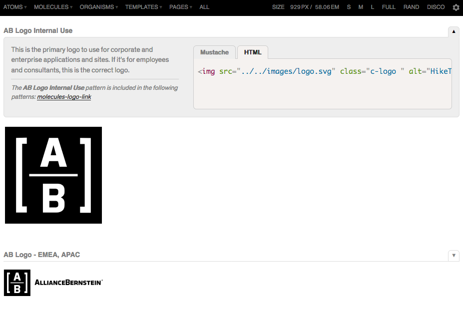
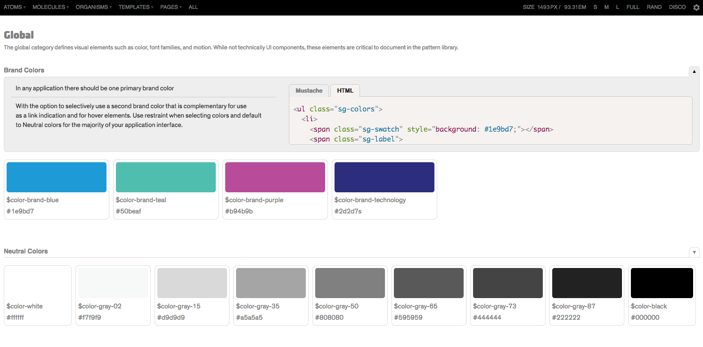
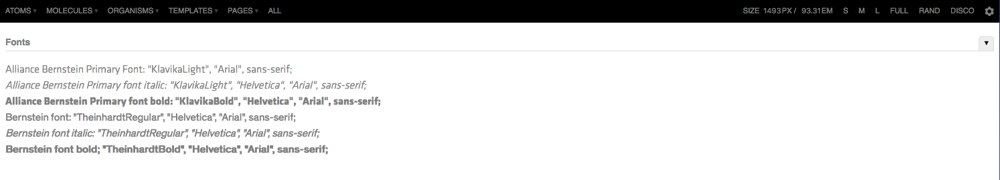
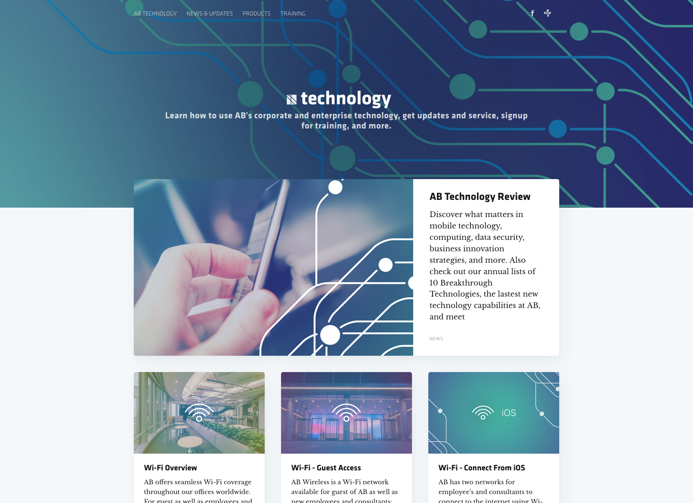

Design Systems
Of late, in my practice, I’ve been working on the challenge of implementing design systems. At AB, we’ve just over half a dozen technology teams serving different aspects of the business. In the corporate and enterprise technology teams we have about 800 people working on various enterprise products at any given time with hundreds of products happening simultaneously.
Challenge
With an organization of this size and only a few designers to go around, the need for a design system became apparent as soon as I arrived. A system to empower our development focused teams to get product to market faster while elevating our brand and user experience standards.
Global Enterprise Technology | Marketing & Brand
- Corporate & Enterprise Technology
- Infrastructure
- Client Group
- Equity
- Fixed Income
- Research
- Private Client
Step One - Institutional Buy-in for Design Systems
It goes without saying, without buy in from across the organization, a design system won’t be much use. No matter how much effort the teams and myself put into producing it. So, I set out working with the different groups at AB to begin building consensus around the need for the system. In this step I talked with AB’s Developers Guild, key technology project managers, engineers, and our new UX Guild. Together, we quickly established the importance of developers within our organization and with that we had buy in around the principle that the primary audience of the design system would need to be developers.
Step Two - Content Inventory
Having multiple tracks of the design system is helpful. What’s that mean? At AB, the UX discipline’s growth has meant a distributed set of lead designers throughout the organization. Some of us on the brand and global marketing teams, others serving the global technology umbrella. The benefit to this is that we get more exposure for user centered design thinking across the organization as a whole. In the case of AB, the marketing and brand teams began working on a client facing design system inventory just as the corporate and enterprise technology teams started thinking about how to improve a lot of our enterprise apps and services.
-
The marketing group produced the initial UI content inventory. Once complete, they produced a new design component library in Sketch.
With the newly emerged set of patterns. The marketing group was able to produce a new library in Sketch for designers across the organizations to quickly adopt the same design language and helping to enforce better componentization of UI elements.
-
Corporate and Enterprise Technology implemented Pattern Lab. A visual library for developers to reference UI elements. With the Pattern Lab, developers from across the organization are able to quickly reference the fonts, icons, SVG images, and image libraries that make of the different components identified in the initial UI inventory.

With the new system, developers only have to clone the design system from the git repository, ensuring they always have access to the latest fonts, logo, and icon systems for their applications.
Step Three - Show and Tell | Pattern Lab
The first project that we used to help launch the new patterns was a subsite of our corporate intranet. Focused on showcasing user guides and stories to help employees adapt to our new technology environment.

With Pattern Lab, developers can easily reference any component they need when building their application, copy the markup HTML from the lab, and have the design for their app seamlessly, click into place.

Seeing it in Action - AB Technology | Intranet and Guides
Being in the middle of a massive digital effort means that documentation doesn’t just stope at the new design system for our developers. One of the first projects I was able to use to both build out the initial pattern library as well as benefiting from the new consensus across AB is our intranet site dedicated to helping employees and consultants worldwide get access to guides and useful how-to guides using the array of new SaaS and cloud services we’ve introduced over the past several years.

Step Four - Ongoing Maintenance | Componentization of UI elements
With the base system now in place. The term componentization becomes ever more relevant. With multiple corporate and enterprise apps in need of modernization and new feature development. The next big enterprise apps to use the new system include.
- eRequest - AB’s corproate workflow tool for all technology and service request
- Corporate Intranet - AB’s intranet redesign
- Zoom Desktop App Redesign - our new cloud based video and audio conferencing platforms customized dashboard and desktop interface
- Symphony Messaging - our new chat communications platform will benefit with our new corproate apps implementing the design system
- and more more
Step Five - Unleash | The Teams are Ready for More Complete Design Sprints
With the new toolset in place and multiple teams contributing to the new code base maintenance. We now have a tool ready for our Labs and User Centered Design and Engineering teams to use throughout new design sprints on client facing tools with our business clients. Having a well documented and thorough design system in place is a massive endeavor with major operational efficiencies to be gained. We’re thrilled to be a the begnning of our journey with design systems at AB.
Subscribe to Timothy Gaull
Get the latest posts delivered right to your inbox